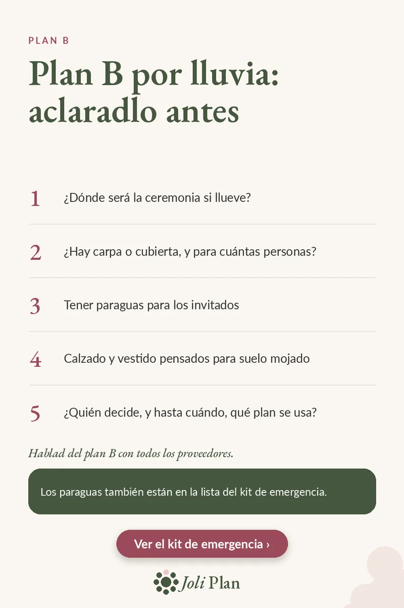

Plan B
Plan B por lluvia en la boda: 5 preguntas antes
Actualizado el 18/11/2026
Nadie quiere pensar en la lluvia el día de su boda, pero tener un plan B os ahorrará dudas de última hora. Si aclaráis estas cinco preguntas con tiempo, sabréis enseguida qué hacer cuando llegue el día. Aquí tenéis la lista para ir marcando.
Ver el planificador de boda en Etsy ›

Las 5 preguntas
- ¿Dónde será la ceremonia si llueve?
- ¿Hay carpa o cubierta, y para cuántas personas?
- Tener paraguas para los invitados
- Calzado y vestido pensados para suelo mojado
- ¿Quién decide, y hasta cuándo, qué plan se usa?
Ceremonia, carpa y cubierta
Preguntad al lugar dónde se traslada la ceremonia si llueve: a un salón, bajo una carpa o a otro espacio. Preguntad también si la carpa o la cubierta tiene sitio para todos los invitados a la vez, porque una cubierta pensada solo para una parte de ellos no ayuda si todos buscan refugio al mismo tiempo.
Pedid que os lo expliquen con claridad y, si podéis, por escrito. Así, vosotros y el lugar tendréis la misma idea de lo que ocurre si llueve.
Paraguas, calzado y vestido
Los paraguas para los invitados son fáciles de conseguir y fáciles de olvidar. Dejadlos en la entrada o pedid a una persona de confianza que los reparta si hace falta.
Pensad también en el suelo mojado: unos zapatos que se hunden en el césped o un vestido largo que arrastra por caminos húmedos pueden dar problemas el mismo día. Tened una alternativa preparada y comentadla con vuestros testigos.
¿Quién decide, y hasta cuándo?
Decidid de antemano quién toma la decisión, por ejemplo vosotros dos o una persona de confianza, y hasta qué momento se puede cambiar de plan. Así nadie tiene que discutirlo la mañana de la boda y todos saben a quién esperar para saber qué plan se usa.
Hablad del plan B con todos los proveedores
Hablad del plan B con todos los proveedores. Quien sabe qué pasa si llueve puede prepararse con tiempo y no se entera en el último momento.
Los paraguas también están en la lista del kit de emergencia.
Cómo repasarlo juntos
Sentaos un rato los dos con la lista de las cinco preguntas y apuntad al lado de cada una la respuesta y la persona que se encarga. Si alguna queda sin respuesta, es la primera que conviene preguntar al lugar o a los proveedores.
Volved a leer la lista unos días antes de la boda para comprobar que todo sigue como lo habíais acordado.
Preguntas frecuentes
¿Qué hay que aclarar para el plan B por lluvia en una boda?
Dónde será la ceremonia si llueve, si hay carpa o cubierta y para cuántas personas, paraguas para los invitados, calzado y vestido para suelo mojado y quién decide qué plan se usa.
¿Con quién hay que hablar del plan B?
Con todos los proveedores. Quien sabe qué pasa si llueve puede prepararse con tiempo.